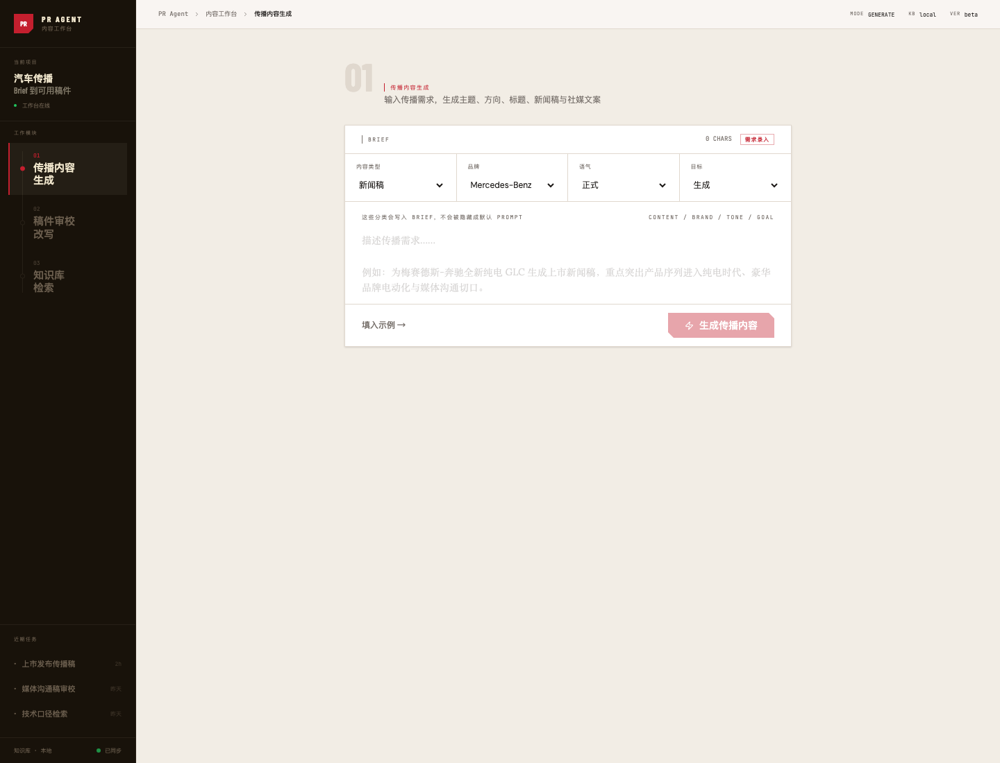

面向汽车公关工作的内容工作台。把传播 brief 转成可用初稿，也能审校稿件、统一品牌口径，并从本地知识库检索资料；现已接入 React 前端与 FastAPI 后端，在线可体验。
PR Agent 不是一个单纯的“AI 写稿器”，而是一套围绕汽车传播流程设计的工作台：先收集 brief 和分类信息，再生成传播主题、方向、导语、新闻稿段落和社媒文案；也可以对已有稿件做风险检查、口径统一和 PR 风格改写。
核心流程从 brief 开始，而不是从空白聊天框开始：

AI 写稿不难。真正难的是让输出稳定符合汽车传播场景：不混入无关车型，不编造参数，不把技术口径写成营销夸张，也能留下可继续编辑的交付物。
我访谈了 20 多位从业者，确认大家真正需要的不是“更会聊天的 AI”，而是能贴近真实工作流的内容工具。
所以我把它做成了专用工作台。
生成、审校、检索的输入和判断标准不同，所以拆成独立模块，而不是塞进一个聊天框。
内容类型、品牌、语气、目标会显式写入任务上下文，用户能看见自己正在控制什么。
结果按传播主题、方向、导语、稿件段落和社媒文案整理，像交付给顾问继续编辑的 briefing document。
测试检索质量时，我发现知识库里约三分之一的内容怎么搜都召不回，像消失了。
这段能说明：我读得懂这套系统底层在做什么，能用数据定位问题，也会验证修复没有副作用。
最近一版把 Figma Make 生成的 React 前端接到 FastAPI 后端，保留交互感，同时把 AI 感降下来：左侧是工作模块，中央是 brief 表单和文档式结果。点下面切换看对比：
现在用户能从 brief 开始，也能直接审校已有稿件，路径更接近真实工作。
我把它当成要交付的产品来收尾：
技术栈：React · Vite · FastAPI · FAISS · sentence-transformers · Docker · Zeabur。
做出来已经不难。我想展示的是几件事：